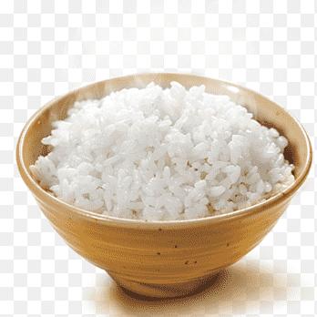

Rice recipe
How to properly cook rice

Description
Cooked rice is essential to Indian cooking but is difficult to get right. Follow the instructions below to get it perfect the first time.
Ingredients
- Uncooked rice (1 cup)
- Water (2 cups)
- Soak rice for 10 mins in water
- Boil 2 cups of water in a pan
- After water starts to boil, add rice and set flame to medium
- Cover and cook for 10 mins
Back to main page